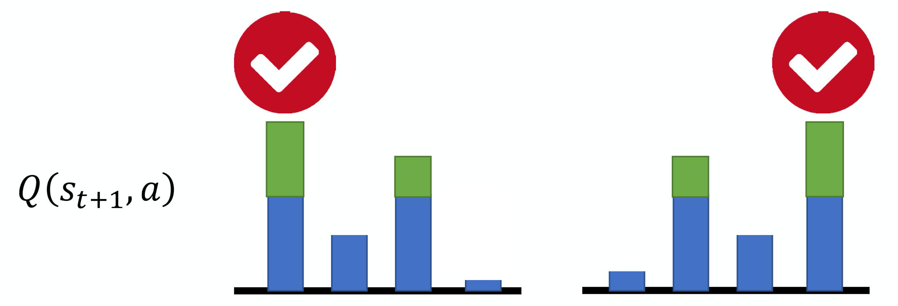
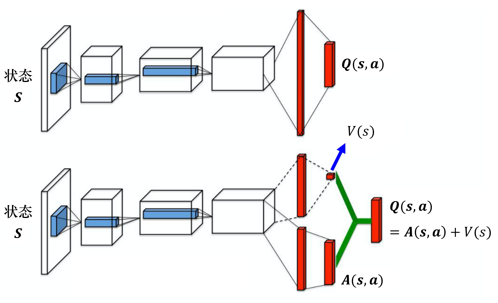
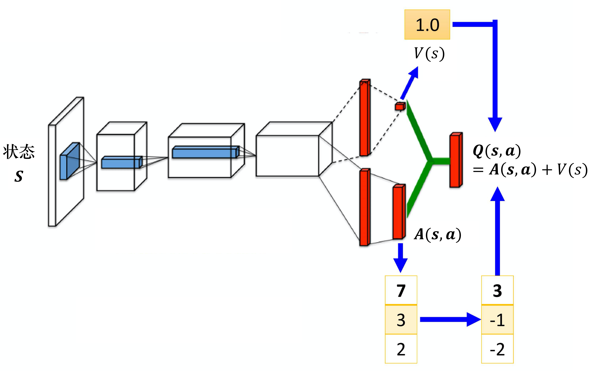

强化学习基础巩固（四）——DQN改进算法
DQN 算法敲开了深度强化学习的大门，但是作为先驱性的工作，其本身存在着一些问题以及一些可以改进的地方。于是，在 DQN 之后，学术界涌现出了非常多的改进算法。本章将介绍其中两个非常著名的算法：Double DQN 和 Dueling DQN，这两个算法的实现非常简单，只需要在 DQN 的基础上稍加修改，它们能在一定程度上改善 DQN 的效果。
Double DQN
普通的 DQN 算法通常会导致对 Q 值的过高估计。传统 DQN 优化的 TD 误差目标为：
但目标的值很容易被设得太高，因为在计算目标的时候，我们实际上在做的，是看哪一个可以得到最大的 Q 值，就把它加上去变成目标。例如，假设我们现在有 4 个动作，本来它们得到的Q值都是差不多的，它们得到的奖励也是差不多的。但是在估计的时候，网络是有误差的。如图（a）所示，假设是第一个动作被高估了，绿色代表是被高估的量，智能体就会选这个动作，就会选这个高估的 Q 值来加上来当作目标。如图（b）所示，如果第四个动作被高估了，智能体就会选第四个动作来加上当作目标。所以智能体总是会选那个 Q 值被高估的动作，总是会选奖励被高估的动作的Q值当作最大的结果去加上当作目标，所以目标值总是太大。

为了解决目标值总是太大的问题， 在DDQN里面，选动作的Q函数与计算值的Q函数不是同一个。在原来的DQN里面，我们穷举所有的，把每一个都代入Q函数，看哪一个可以得到的 Q 值最高，就把那个 Q 值加上。但是在 DDQN 里面有两个 Q网络，第一个 Q网络决定哪一个动作的 Q 值最大（我们把所有的代入 Q 函数中，看看哪一个的Q 值最大）。我们决定动作以后，Q 值是用算出来的。这样，即使其中一套神经网络的某个动作存在比较严重的过高估计问题，由于另一套神经网络的存在，这个动作最终使用的Q值不会存在很大的过高估计问题。如果高估了它选出来的动作，只要没有高估动作的值，算出来的就还是正常的值。假设高估了某一个动作的值，也是没问题的，因为只要不选这个动作就可以。
我们动手实现的时候，有两个Q网络：会更新的Q网络和目标Q网络。所以在DDQN里面，我们会用会更新参数的Q网络去选动作，用目标Q网络（固定住的网络）计算值。
DDQN相较于原来的DQN的更改是最少的，它几乎没有增加任何的运算量，也不需要新的网络，因为原来就有两个网络。我们只需要做一件事：本来是用目标网络来找使 Q 值最大的，现在改成用另外一个会更新的Q网络来找使 Q 值最大的。如果只选一个技巧，我们一般都会选DDQN，因为其很容易实现。
Dueling DQN
Dueling DQN 是 DQN 另一种的改进算法，它在传统 DQN 的基础上只进行了微小的改动，但却能大幅提升 DQN 的表现。在强化学习中，我们将状态动作价值函数减去状态价值函数的结果定义为优势函数，即。在同一个状态下，所有动作的优势值之和为 0，因为所有动作的动作价值的期望就是这个状态的状态价值。据此，在 Dueling DQN 中，Q 网络被建模为：
Dueling DQN相较于原来的DQN，它唯一的差别是改变了网络的架构。Q网络输入状态，输出的是每一个动作的 Q 值。如图所示，原来的DQN直接输出 Q 值，Dueling DQN不直接输出 Q 值，而是分成两条路径运算。第一条路径会输出一个标量。第二条路径会输出一个向量，它的每一个动作都有一个值。我们再把和加起来就可以得到 Q 值。

Dueling DQN 能更高效学习状态价值函数。每一次更新时，函数都会被更新，这也会影响到其他动作的值。而传统的 DQN 只会更新某个动作的值，其他动作的值就不会更新。因此，Dueling DQN 能够更加频繁、准确地学习状态价值函数。
可能会有人认为使用Dueling DQN会有一个问题，Dueling DQN最后学习的结果可能是这样的：智能体就学到等于 0，等于 Q，使用任何Dueling DQN就没有任何好处，就和原来的DQN一样。
为了避免这个问题出现，实际上我们要给一些约束，让的更新比较麻烦，让网络倾向于使用来解决问题。
例如，我们有不同的约束，一个最直觉的约束是必须要让的和是0。如果的和都是 0，我们就可以把的值想成是上面 Q 的每一列的平均值。这个平均值，加上的值才会变成是 Q 的值。所以假设在更新参数的时候，要让整个列一起被更新，更新的某一列比较麻烦，所以我们就不会想要更新的某一列。因为的每一列的和都要是 0，所以我们无法让的某列的值都同时变动去拟合Q。这时候就会强迫网络去更新的值，让我们可以用比较有效率的方法去使用数据。
实现时，我们要给这个一个约束。例如，如图所示，假设有 3 个动作，输出的向量是，我们在把与加起来之前，先进行零均值化。

零均值化的过程如下：
- 计算均值（7+3+2）/3=4；
- 向量的每个元素的值都减去均值4，于是零均值化的向量为。
接着我们将向量中的每个元素的值加上 1，就可以得到最后的 Q 值。这个零均值化的步骤就是网络的其中一部分，在训练的时候，我们也使用反向传播，只是零均值化是没有参数的，它只是一个操作，可以把它放到网络里面，与网络的其他部分共同训练，这样就会有比较大的约束，网络就会倾向于去更新的值，这就是Dueling DQN，即：
此时。虽然它不再满足贝尔曼最优方程，但实际应用时更加稳定。
优先经验回放（prioritized experience replay，PER）
我们原来在采样数据训练 Q 网络的时候，会均匀地从回放缓冲区里面采样数据。这样不一定是最好的， 因为也许有一些数据比较重要。假设有一些数据，我们之前采样过，发现这些数据的时序差分误差特别大，这代表我们在训练网络的时候，这些数据是比较不好训练的。既然比较不好训练，就应该给它们比较大的概率被采样到，即给它优先权（priority）。这样在训练的时候才会多考虑那些不好训练的数据。实际上在做 PER 的时候，我们不仅会更改采样的过程，还会因为更改了采样的过程，而更改更新参数的方法。所以PER不仅改变了采样数据的分布，还改变了训练过程。
Q&A
Q：深度Q网络都有哪些变种？引入状态奖励的是哪种？
A：深度Q网络有3个经典的变种：双深度Q网络、竞争深度Q网络、优先级双深度Q网络。
- 双深度Q网络：将动作选择和价值估计分开，避免Q值被过高估计。
- 竞争深度Q网络：将Q值分解为状态价值和优势函数，得到更多有用信息。
- 优先级双深度Q网络：将经验池中的经验按照优先级进行采样。
Q：请简述双深度Q网络原理。
A：深度Q网络由于总是选择当前最优的动作价值函数来更新当前的动作价值函数，因此存在过估计问题（估计的价值函数值大于真实的价值函数值）。为了解耦这两个过程，双深度Q网络使用两个价值网络，一个网络用来执行动作选择，然后用另一个网络的价值函数对应的动作值更新当前网络。
Q：请问竞争深度Q网络模型有什么优势呢？
A：对于，其对应的状态由于为表格的形式，因此是离散的，而实际的状态大多不是离散的。对于Q值。其中的是对于不同的状态都有值，对于不同的状态都有不同的动作对应的值。所以本质上，我们最终的矩阵是将每一个加到矩阵中得到的。但是有时我们更新时不一定会将和都更新。我们将其分成两个部分后，就不需要将所有的状态-动作对都采样一遍，我们可以使用更高效的估计Q值的方法将最终的计算出来。